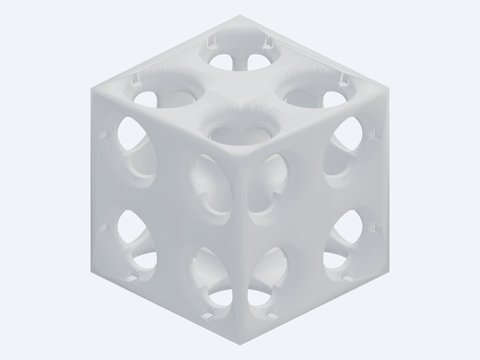

2×2×2 Technic 立體方塊（含沉頭）
2×2×2 Technic Cube with Counterbores
三個方向都能插 Technic 銷的 2×2×2 立方塊，每個孔兩端都有沉頭，六個面都可以和其他零件貼平連接。
technic_cube_2x2（FreeCAD 等角視圖）
重點規格
- 外形
- 15.8 × 15.8 × 15.8 mm（2 × 2 × 2 格）
- 孔
- 三向各 2 × 2，共 12 個貫穿孔
- 孔徑
- 4.94 mm，孔距 8 mm
- 沉頭
- Ø6.2 × 0.8 mm，共 24 個
設計
- 邊長 2 格減 0.2 mm，和其他 Technic 零件的高度規則一致，疊放時上下貼齊
- X、Y、Z 三個方向各 4 個貫穿孔，孔位在 ±4 mm 的 8 mm 格上，三向的孔在內部 8 個點交叉
- 每個孔兩端都有沉頭，銷的凸緣能沉進去，任何一面接零件都能貼平
建模細節
- 所有尺寸都在 Params 試算表：邊長、孔距、孔徑、沉頭直徑與深度
- 沉頭多挖 0.02 mm：剛好 0.8 mm 時，相鄰兩面的沉頭會擦邊相切，匯出網格會有破面
- 直向孔用 LinearPattern 陣列；橫向孔用陣列時 FreeCAD 1.1 只切出碎片，所以逐一建立，共 29 個特徵
列印
- 任何一面朝下都可以印，不需要支撐
- 橫向孔頂部有一小段懸空，孔徑不到 5 mm 靠橋接即可；銷太緊時把 pin_d 微調大一點
檔案下載
| 預覽 | 類型 | 說明／下載 | 大小 |
|---|---|---|---|
| FCStd | FreeCAD 參數化模型 technic_cube_2x2.FCStd | 964 KB |
 | 3MF | 3MF technic_cube_2x2.3mf | 244 KB |
| PY | 建模腳本（立方塊＋半高方塊） build_cube_technic.py | 5 KB | |
| PY | 共用模組：馬達座核心幾何、參數表、匯出與 GUI 重存 tt_adapter_core.py | 10 KB | |
| PY | 在 FreeCAD 介面重存檔案，寫入縮圖與顯示狀態 gui_finish.py | 2 KB |
FCStd 用 FreeCAD 1.1 開啟（參數在 Params 試算表）；3MF 可直接拖進 Bambu Studio 或其他切片軟體。